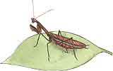

I have a confession to make. When I first moved from the city to a little New England hill farm a quarter-century ago, I found the old barn choked with spiderwebs. Walking into the long-unused milking parlor or up the stairs notched into a log and into the hay loft was a battle with one tough, sticky web after another. Old ones were matted together in dusty ropes. Each fresh one that splattered coldly against my face was filled with dead flies. And, up in the corner was a great, fat, hairy gray barn spider (technically: Araneus cavaticus ) measuring up to an inch-and-a-half from leg-tip to leg-tip. Yech! And they all seemed able to rebuild destroyed webs bigger
han ever overnight.
Though fresh from the suburbs, I had enough Nature education to wait till the young barn swallows were fledged and gone from their half-cup-shaped mud nests stuck high on the barn rafters. Then I went to Sears and bought an insecticide fogger that fit the rotary lawn mower. I filled the reservoir with the all-purpose oil-based bug killer that came with it and plugged the liquid-to-smoke converter into the exhaust. That night, after the bats had taken flight from the roof peak, I started the machine and walked the length of the barn, filling the whole of it with a virulent white smog. From the next morning on, a brushed away web stayed gone.
Then I began taking on livestock. I put 50 newly fledged chicks into a pen I built on the back barn wall, then added cages of rabbits, a pair of dairy goats, and then a horse. With the animals came droppings and, as you've doubtless guessed, with the manure came flies-a buzzing, humming, swarming plague of them.
Unimpeded by the former spiderweb gauntlet, entire hatches of mosquitoes, blackflies, no-seeums, deerflies, and horseflies flew in from the pond and woods to seek blood-avian, animal, or human. Horn flies appeared in swarms and attacked horns and hoofs. Carrion flies, flesh flies, and screw flies teemed around moist animal eyes and noses. The air buzzed with bluebottles and green bottles, and little biting stable flies stabbed into my ankles as well as the animals: Blowflies and houseflies bred in the manure, and then tried to move into the house. An invasion was underway.
I used one spray on the manure piles and another for the animals and still another for the sunny side of the house where flies in their hundreds congregated each morning to warm up for the attack. Nothing seemed to have any effect-not even curtains of long, gummy fly strips that I bought by the box. So, I had to invest scarce funds in rolls of window screen that I stapled over every door and window in the house and barn. 1 helped some, but not much.
Then came the revelation. Next spring, while helping a neighbor catch sheep for shearing ... an dodging the many years' accumulation of dead fly-filled spiderweb in her sheep shed, I realized tha there weren't all that many live flie around ...and, at last I made th spider-to-fly connection. I asked my sheep-raising friend if I coup borrow some spiders. When he spring crop of barn spiders pro duced their marble-sized spun-sill egg sacks, I pulled several from their webs and hung them around my own barn. In short order, each sack produced dozens of tiny spiderlets and by fall, my barn was once again becoming one big flying-bug trap. The following spring, the different fly species appeared at the usual times, but the spiderwebs were up first, blocking all the insect' flyways. The spiders seemed to grow huge overnight, and flies never became more than a minor nuisance ...so long as I kept up with the manure. With that I began to gain more than a book-learned understanding and appreciation of nature's wisdom. I became more than an observational environmentalist and started practicing chemical-free agriculture and natural living in earnest.
Spare the rod
Often, it's the most conspicuous insects that prey on the real pests.
I don't know why most humans are naturally repelled by most spiders and insects. Butterflies are pretty and ladybugs are unthreatening, but the hard, jointed external skeletons and multiple appendages of less compatible kinds are so nightmarish-so unlike ourselves, I guess. Baby chicks and ducklings are soft and fuzzy. Toads and frogs and salamanders are kind of Kermit-cute. Most mammals are appealing, especially the young with their big eyes. But a newhatched baby spider has a half dozen eyes, eight hairy little legs, and a full compliment of palps, mandibles, and fangs. A baby butterfly is a caterpillar-second cousin to a fishing worm.
But, we should resist the natural impulse to step on every bug we come across no matter how ugly (and, even though insects are man's greatest competitor for the products of field, pasture, and orchard). In a natural setting, animal, bird, and bug predators keep plant eaters more or less under control. Kill a bug and you are most likely squishing one of the predator insects that tend to be more conspicuous than the leaf-grazing and sap-sucking insects that do crop damage. And, every predator counts-especially in the monoculture of farm or garden. Natural predator-to-prey ratios are keyed to normal prey populations in a natural mix of plants. There are many fewer predators than prey and the hunters need their all-natural strength of numbers to counter a typical population of, say aphids. They need added help if a combination of weather, prior year's hatch, and other imponderables combine to produce a blossoming of asexual female aphids that (without benefit of males) can produce enough clones to suck your sweet pea vines dry in less than a week.
Here is some of what I've learned over the years about how "good bugs" keep garden pests honest. And I have another admission to make ...but it's one I'm proud of. Once those barn spiders taught me the effectiveness of natural controls, I never again used harsh chemical insecticides. Not that I haven't lost my share of radishes to root weevils, tomatoes to blossomend rot, and corn to smut and borers. But, I just set seed a little earlier or a little later, or a little deeper or shallower, a little farther spaced or closer together, and I always plant extra for the normal pest population. And that's the secret-keeping pest populations normal as you can, and encouraging natural predators to help out.
A famed pollinator, the bumble is actually too short-tongued to reach
many blossoms.
Pollinators
Most flowering garden vegetables need to be cross-pollinated for best yield. I love my honeybees, but their effectiveness in pollinating the garden is exaggerated. Honeybees tend to gang up on the most abundant sources of nectar. For years I kept a hive between a pair of honeysuckle bushes-one white, one pink, which bloomed magnificently and smelled heavenly for two weeks in early spring. But the honeybees are too short-tongued to reach the nectar at the base of the long honeysuckle blossom, and they just zoomed off right between the bushes ...to the tops of neighboring basswood trees that blossomed odorlessly and inconspicuously at the same time as the honeysuckle.
Nonetheless, during a sunny day at peak bloom, the bushes hummed and buzzed to the point they appeared alive. The bushes were host to an amazing collection of insects. I got out my bug book and identified dozens of moths and butterflies, beetles, and bugs feasting on the nectar. Bumblebees came in large and small sizes and in several color combinations. Brown and black, yellow and white native bees appeared in sizes, shapes, and color combinations I never realized existed. There were flies that looked like bees and bees that mimicked flies and flies that were ordinary-housefly looking but for blazing red eyes or shimmering wings, plus wasps in all variations of size, color, body, and leg length. As I read on in the guide, I learned that a great many of these insects that sipped nectar as adults either raised their young on pollen and nectar (pollinating crops in the process) or hunted caterpillars, beetles, and other forest orchard, and garden pests to feed 'em on.
The best helpful-bug attractants I can recommend are sweet-smelling, nectarproviding flowers. I surround my garden spots with lilacs and other shrubs and perennials, and plant annuals in the rows. Cut flowers, hummingbirds, and the delights of colorful year-round bloom are added benefits.
The hundreds of species of solitary and small-colony native bees that rear their young on pollen and honey are far more important home-garden pollinators than the honeybee. They build a tremendous variety of nests: mud tubes, holes in trees, tubes of leaves, stalks of plants, and more. Among the best pollinators are the mining and boring bees. If you have a good clay bank on your property, leave it exposed. You'll find the surface shot-holed with beebrood chambers. To attract wood-boring bees to your garden, set fallen logs or old lumber planks on end and in the sun around the garden plot. Carpenter bees will chew out tunnels to rear their young. You can give them a hand by drilling quarterinchdiameter holes sloping up slightly into thick planks. If the bees don't use them, small mud nest-building wasps will.
And, try not to harm the most swattable "bees" you come across ...not bees at all, but big-eyed "hover flies" that suspend themselves just in front of your eyes and dart in to taste your skin when you're all sweaty from outside work. They are harmless but must think you and I smell like aphids, because they lay their eggs on aphidcovered plants. The young feed greedily upon the bad bugs till its time to pupate in the soil.
Other Controls for Aphids, Mealybugs, and Scale Insects
Hover flies can't kill all the aphids; firstgeneration female aphids can clone themselves parthenogenetically (no males involved) in huge numbers in little time. To keep them off the young garden vegetables, I plant perennial peony bushes around the garden and annual nasturtiums in the rows. Stems of both plants are always harmlessly covered with black and green aphids-laid by flying females and placed there by sugar ants that tap the honeydew the tiny bugs produce. The ants seem to prefer running their aphid herds on nasturtiums and peonies to infesting my garden peas. But I've never been able to keep the aphids from killing early-planted fava or broad beans. Native to Europe, broad beans have never naturalized in North America and-in my cool New England climate at least-aphid-herding ants or flying-stage aphids or both seem to prefer this foreign exotic to anything! In their place I just plant extra limas and wait a while.
For aphids, mealybugs, scale insects, and the other soft-bodied insects and larvae that are attracted to garden plants, you can field a whole army of insect and arachnid predators. Brown and green lacewings ( Hemerobius and Chrysopa species) are related families of very common half-inchlong insects with four long, rear-facing, filmy wings with no wind covers to hide them. Both adults and larvae are such voracious predators of soft-bodied insects that the immature are called "aphid wolves" and "aphid lions." Different species occur throughout the continent, and one or more is flying from spring through summer. The best things you can do to encourage them is to avoid all poisons in the garden and not use an electronic "bug zapper" or leave the barnyard light on at night. Soft-bodied as their prey, they are highly susceptible to insecticides. And, like night-flying moths and june bugs, they will foolishly batter themselves to death on a night lamp.
Everybody's favorite insect is the ladybug (the Coccinellida family). The many species of these orange, yellow, or red, black-spotted (or black with colored spots), round-bodied little insects and their larvae are savage predators of softbodied garden pests. During the European Middle Ages, they were so helpful in controlling grapevine pests they were dedicated to "Our Lady," thus the name.
In snow country, the final hatch of adults swarm and overwinter together in sheltered places to renew the race next year. Large numbers always choose to hibernate under the clapboards on the north wall of my old house. On sunny latewinter days, they'll crawl out to wander around sleepily inside the storm windows. To preserve their energy for the coming spring's gardening, I collect them, put them in the fridge in a canning jar (topped with mesh screening held on with an elastic band so air will circulate and they'll not suffocate). I release them a little later than they'd emerge naturally-after the new lettuce and sweet peas are up and attracting aphids.
I understand that a new immigrant species from Asia (red with black spots and a white "M" on its forehead) is a little too chummy in its winter-hibernating style. Come fall, one of them will select what it feels to be a nice wintering location, but one that you may not like ...under the dining room table or in your bureau sock drawer, for example. Then it secretes a pheromone-a chemical signal-that invites hundreds of its brethren to pile on for the winter. I've not experienced them yet, but if you should, just lay your hands on a large jar or two, cover it with screen, and keep the lot of them cool enough to remain dormant till spring.
Western species of both lacewings and lady-bugs are sold commercially. Lacewings are reared in bug labs and ladybugs are collected from overwintering caves high in the California Sierras. In my experience, they are programmed to take flight and disperse as soon as they are released. Fine for greenhouses, but I doubt that they stick around your garden long enough to do your pea vines much good.
Japanese Beetles
Popillia japonica arrived in North America in 1916 on shipments of Japanese iris, and has spread from Maine to the Carolinas. An example of an uninvited immigrant with no species-specific local predator, these aggressive, iridescent, halfinch-long scarab beetles can aggregate on orchard fruit and garden plants and chew them to shreds. I have known so many to gather on my pole beans and tall sunflowers their weight makes the plants droop. When you approach, they stick their spiky hind legs up, then buzz off before you can knock them into a can of water.
Milky spore disease is an effective bacterial killer of the underground larvae of Japanese beetles. You can purchase the dormant spore material and scatter it on the lawn, where it attacks the beetle grubs as they develop from eggs laid in the sod. In time, the disease will spread and exert a degree of control on the pests. Trouble is, the adults can fly long distances. You might enlist your neighbors and inoculate a large area of lawn.
A pair of unrelated insects that feed on nectar as adults, tachinid flies and the oneand-a-quarter-inch five-banded tiphiid wasp, evolved to locate native may beetle (june Bug) larvae underground and dig down to lay their parasitic eggs on or near them. They are becoming effective predators of Japanese beetles as well. You could mistake many species of tachinids for houseflies and the tiphiid wasp for a stinging pest and swat either of them. Don't.
And finally, please don't kill the moles that tunnel around in the lawn. They live on beetle grubs and will clean up the Japanese beetle larvae missed by milky spore and the parasitic insects.
Caterpillars
Moths and butterflies are pretty to look at, but their larvae are a major nuisance of garden and orchard. And, some of the most effective predators of caterpillars are the most likely to get swatted. The giant ichneumon (three inches long) wasp is really fearsome looking. It has a long, sticklike abdomen ending in a bulb, and in addition, the females have a long ovipositor (egg layer) at the tip. Legs dangle as they fly, and when they light on a leaf, they coil the long tail under them in a menacing fashion. But, they are a menace only to garden pest-insects. Along with the much smaller chalcid, braconid, and smaller ichneumon wasp species, they lay their parasitic eggs on all kinds of caterpillars.
Typically, a parasitic wasp lays one egg at a time on dozens of caterpillars.
Some female wasps will sting, but most live on nectar and won't bother anything but caterpillars unless you hassle them. Some are tiny and go after small larvae. Others specialize in large and voracious caterpillars such as tomato hornworm: the larvae of Manduca quinquemaculata, a big but seldom-seen night-flying moth. The huge caterpillars feed at night on foliage of green pepper plants, eggplant, tomato, potato, tobacco, and wild nightshades. If you see a big caterpillar (up to four inches long, tomato-green with a black, rear-facing curved spine at the back) with 1-50 little white eggs like rice grains along its back, let it be. The wasp larvae will hatch and tunnel inside the body, and in time the worm will die "giving birth" to a new generation of predatory wasps. By the way, the tomato hornworm's "horn" is not poisonous as often represented. If you see a hornworm without parasites, pick it. The spines of some other caterpillars can pierce your skin, break off, and cause a minor irritation-but not so much that you should resist knocking them off your plants.
The most destructive pests in my garden are "cabbage worms," the broccolistem-green larvae of small white and sulfur butterflies, especially the European cabbage butterfly, Pieris rapae. These are the yellowish-white butterflies that you see fluttering daintily in mating pairs above your broccoli and other crucifers. An accidental introduction dating from the 1860s, P. rapae has no native North American predator and can reduce any cabbage planting to a ruin in a week from the egg stage. Each year I purchase a large bottle of Bacillus thuringiensis, -another living critter-a bacterium that infects the digestive tract of moth and butterfly caterpillars. After a bite of sprayed foliage, the bug gets enough of a bellyache that it quits eating within a day or two and shrivels up in a week. BT is harmless to any other creature, so will do no damage to baby birds if a parent feeds them a BT-treated caterpillar or to your own kids if they eat just-BTed cabbage leaves right off the plant.
I mix BT according to directions and spray it on young crucifers when first set out, after every rain early in the growing season, and once a week or so till harvest. I use a long-handled backpack pressure sprayer and poke the spray head under leaves where the caterpillars hide out. Once in a while a caterpillar will survive inside a broccoli head, so I always bathe openheaded crucifers in salt water before cooking or blanching for freezing. But, it has been a long time since I went to the garden to find the leaves of my young, laboriously inside-raised cabbage plants all cheese-holed by cabbage worms.
BT is effective against all caterpillars. Occasionally my beans are threatened by the two-inch larvae of one of the little brown Skipper butterflies-called "bean leaf rollers" in the south. One shot of BT takes care of them. Any time our fruit or lawn trees or flowering plants are threatened by an outbreak of gypsy moths, tent caterpillars, or other moth or butterfly larvae, I put the high-pressure nozzle on the garden-hose sprayer and fire BT up into the leaves when forecasters have promised an extended period of dry weather. Spraying the insects directly does no good. But, one or two applications on the undersides of the leaves they are feeding on works wonders. One year, the kid's play area under a big maple was "all icky" with the long, sticky silks of dangling inch worms. One good spraying of BT up into the tree finished them off in short order.
BT is a good general-purpose bug preventative. I squirt concentrated solution down into new-sprouted sweet corn silks as a faster and better preventative against corn borers than the traditional mineral oil treatment. When the egg of the borer moth hatches and the little caterpillar takes its first chomp, it is infected and seldom lasts long enough to take another. BT also goes around the bases of cucumber vines and other cucurbits-hand-pumped hard enough to get into slits in the stems holding young squash borers. I also spray it according to bug-hatching schedules, on fruit trees, against codling moths, leaf miners, and other destructive caterpillars.
Nobody wants to kill butterflies. Thankfully, most butterfly caterpillars are picky and each species lives exclusively on wild things like sorrel, beech trees, and hairy vetch. You needn't worry about BTing monarchs; they lay their eggs and feed exclusively on milkweed. If you see a pretty, green caterpillar, with black bands and golden spot's, on your carrots or parsley, don't spray. It will develop into a gorgeous eastern black swallowtail ( Papilio polyxenes asterius). Transfer it to a wild carrot. (If you see a whole lot of them-too many to hand-pick-spray away; they can be a real nuisance in quantity. The species is not all that common, but is not at all threatened.)
Some moths are endangered due to pollution and widespread use of insecticides against forest tree pests and in agriculture. The large silkworm moths are never very plentiful and the lovely chartreuse luna moth ( Actias luna ), is an officially endangered species. You may find lone silkworm moth caterpillars-three-inchlong, bright green with yellow or red stripes or spots-in your lawn or orchard trees. Let them graze if you can. Or, transfer them to a wild, chokecherry tree.
Of course, many species can become abundant enough at times to pose a threat to plantings. The rosy maple moth has a twoinch wingspan and in small numbers is a pretty green with white stripes and a pink underbody. In quantity its larvae become thrice-cursed "green-striped maple worms" and a big hatch can strip your prized silver or red maple of all its leaves. BT to the rescue! We treat the banded woolly bear caterpillars ( Isia isabella ) as cute, fuzzy bug pets and forecasters of winter weather-the blacker the bug, the nastier the coming winter. They never bother the garden, but occasionally their cousin, the yellow woolly bear ( Diacrisia virginica ) will reproduce in huge numbers, overrun the garden, and call for BT.
Hornets and Wasps
Least-appreciated among insect predators are the colonial or solitary vespid wasps. Many build mud or paper nests on or near buildings, others overwinter in the warmth of houses-and they will all sting if stepped on or if nests are disturbed. Too many people go for the wasp spray can when they see a paper wasp building her nest under the porch eave, a boring wasp entering or leaving a nest under the house siding, or yellow jackets flying into an opening in a stone wall. The big globular gray-paper nests of pale-faced (whitefaced) hornets built high on barn walls or in trees are favorite targets of rockthrowing or BB-gunning youngsters and a few misguided adults.
All these insects look meaner than they are. They are slick shelled, black or black and yellow, with none of the appealing plump fuzziness and big eyes of a honeybee. The sound they make when flying is a fierce buzz and some ar aggressive around humans. But, they are greatly misunderstood. Paper wasps ( Polistes species) build upside-down umbrella-shaped paper nests in the eaves of barns and porches and raise their broods in full sight of humans. When establishing their territory in early spring, overwintered females will drop down on passersby; grazing the back or your neck or brushing the dog's nose with prickly dangling legs. But they have no intention to sting and won't unless you grab them. Not even swatting them out of the air elicits a sting. Once the nest is built, they quit hassling you and will sting only when the nest is attacked. Though they live on nectar, they catch bugs-mainly plant-eating caterpillars-and chew them up to feed their larvae.
So do all the other vespids-though most prefer to avoid human dwellings. Potter and mud daubers are solitary wasps that lay single eggs in a series of mud nests, then stock each with an anesthetized caterpillar the young will eat alive.
Like bald-faced hornets in their treetop paper-cone nests, colonies of yellow jackets ( Vespula species ) capture thousands of "bad bugs" to nourish larvae raised in large paper nests they build in holes in the ground or in fallen trees or walls. The adults, however, live on nectar and ripe or rotten fruit. And, when the colonies are at peak population, yellow jackets can be a real nuisance. Walking barefoot among fallen apples is sure to get you stung on the sole. The fast-darting yellow and black females don't like being interrupted when sipping at your picnic watermelon. They will buzz up to hover threateningly right in front of your eyes, and some late-season females will sting repeatedly if they are in a bad mood.
There is some evidence that mutation or cross-breeding has produced more aggressive yellow jacket varieties of late. Yellow jackets aren't at all an endangered species, so-especially if small kids are running around barefoot-I don't mind killing off a yellow jacket colony at summer's end. The harvest is in, and the wasps have already collected as many caterpillars as they are going to. Other nests will provide plenty of young queens to winter under rocks and in crannies in tree bark, to emerge and start new colonies next spring.
To eliminate a yellow jacket nest, you needn't use poisons. In late afternoon, set a ripe apple or some orange rinds out on the picnic table in the sun and watch the direction the yellow jackets come from and fly toward. Follow the flight path at a safe distance and you'll soon find them entering and leaving the funnel-shaped entrance of an underground or ground-level nest site. Wait till well after dark, then using a flashlight, place a large bowl over the entrance. Be sure the edge is buried in the soil all around. Or, drop a flat rock on the opening and kick soil all around to seal the edge.
Yellow jackets don't have the sense to dig an alternate entrance and the colony will starve to death. If the nest entrance is concealed under a fallen log or inside a stone wall, move the obstructions. If you can't expose the nest quickly enough to get away before they swarm out, resolve to live with them till frost kills off all but the overwintering queens. They won't use the site again.
Mantids
The praying mantis ( Mantis religiosa ) is a welcome European immigrant. The four-to six-inch-long female is famous for its prayerful stance and for consuming its mate while the amorous fool is still in the throes of mantid passion. It is just one of several mantids (some natives, others immigrants from China) that are all voracious predators. Unfortunately, they eat every bug they come across, including other mantids and beneficial insects. The hard-foam egg dusters are sold, or you can collect them from fields, store overwinter in a cool cellar, and put them in the garden in spring. Hundreds of young mantises will hatch but will immediately start lunching on each other. By summer's end, you are sure to have one mantis in your garden, but only one.
If you come across a mantis in the wild, by all means let it walk onto your hand and bring it home to release in the garden. It won't try to fly away if you move slowly. Mantises make good pets and actually seem to like people. Their heads swivel and they will look at you quizzically or follow a moving finger. They can't sting and won't bite even if you move your hand too fast for them-and they couldn't hurt you if they did bite. The big females will happily hunt on your houseplants over the late summer, though they should be released to breed and lay their eggs well before the leaves fall.
Spiders
One shot of broad-spectrum insecticide will rid your garden of pest insects for a while but (like my barn-smogging mistake) will also kill off some of the most effective insect predators known: the hunting spiders. Orb-web builders like high places and you might find a few webs in the corn or bean poles. A few species build ground webs and snares among low plant growth. But, the real garden helpers are the wolf spiders and jumping spiders. Looking like small crabs, most are small (a quarter- to half-inch). They come in all colors and shapes and have black, beady eyes on the top, sides, and front of their heads. They stalk bugs like tiny tigers and are fast enough to catch plant disease-spreading leafhoppers that can jump a yard straight up if disturbed by a less agile predator. The spiders are well camouflaged, but if you spot one, hunker down in the greenery, remain motionless, and watch it hunt. Like mantises, they seem unafraid of humans; and if you move slowly, you can let them crawl on your hand. I've caught small wolf spiders and (moving slowly) transferred them to a jar and then into my greenhouse where they feasted on whitefiy.
Whether you appreciate their looks or not, give mantises, spiders, and other "good" bugs a little encouragement and they'll be faithful allies in your ongoing battle against garden pests.
|
 Praying mantids are the single members of the beneficial insect family capable of looking over their shoulder. |
Lacewing larvae are often called "aphid lions" because of their fondness for that infamous pest. |
Illustration by Allison Mia Starcher from her book "" Good Bugs For Your Garden."" |
|
Tachinid flies consume many pests, including caterpillars and beetles. |
Japanese beetles generally lay their eggs in lawns or pastures during the hot months. |
Ant Lions, found throughout the southern U.S., eat ants and other small insects. |
|
One of the most versatile ""terminators,"" wasps are common throughout North America. |
|
|